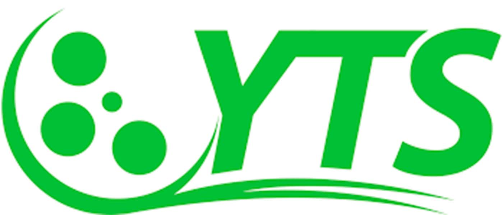

YTS
YTS.am previously known as YIFY Torrents is a peer-to-peer release group that uses BitTorrent to distribute an extensive library of free indie movies and shows. YTS amassed popularity through its small-sized HD package files which attracted millions of viewers.
Content
YTS
- Rating: 8.5/10
- Year Founded: 2010
- Monthly Visitors: 33 million
- Download Speed: 3 MB/s
History
YTS.am was founded in the year 2010 by Yiftach Swery – A computer science student at the University of Waikato. YTS.am was known as YIFY Torrents primarily because it was named after its founder. In 2011, the YIFY brand attracted thousands of users which led to the formation of the official YIFY Torrents website.
After a brief stint of over 3 years, Yiftach announced that he was retiring in January 2014 and would no longer encode or upload videos. That’s when the name YIFY was rebranded to YTS and then moved to YTS.Re. The original management handed everything to the existing team and all the encoding and uploading process was delegated to an automated process called OTTO.
Safety
Firstly, for a torrent site to be safe for browsing, it needs to have an SSL certificate, which YTS.am does have. Secondly, you can use tools such as SEOQuake and MOZ to check the reliability of a domain. Based on my research, YTS.am has a domain score of 26 and a trust score of 42 which makes it a trustworthy website. Any website with DS and TS above 20 and 30 respectively might be worth checking out.